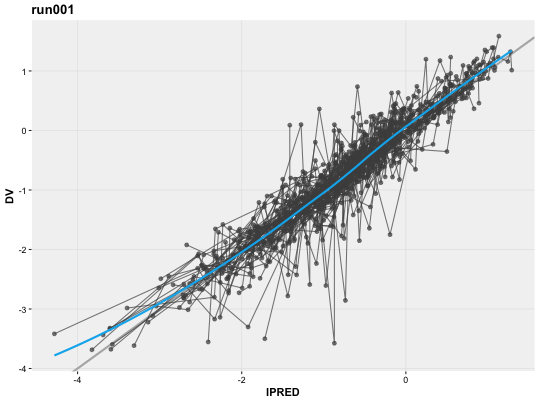

Manually generate scatter plots from an xpdb object.
xplot_scatter(xpdb, vars = NULL, aes = NULL, group = "ID", type = "pls", layers = NULL, title = "@run", subtitle = NULL, caption = NULL, guides = TRUE, xscale = "continuous", yscale = "continuous", plot_name = "xplot_scatter", quiet, prob_n, ...)
| xpdb | An |
|---|---|
| vars | Variable mapping using the |
| aes | xpose aesthetics (eg. |
| group | Grouping variable to be used for lines. |
| type | String setting the type of plot to be used points 'p', line 'l', smooth 's' and text 't' or any combination of the 4. |
| layers | A list of additional ggplot layers to be added to the plot. |
| title | The main title of the plot. If |
| subtitle | the plot subtitle. If NULL automated subtitle will be generated. Use FALSE to remove subtitle. |
| caption | page caption. If NULL automated caption will be generated. Use FALSE to remove caption. |
| guides | should the guides (eg. unity line) be displayed. |
| xscale | scale type for x axis (eg. 'continuous', 'discrete', 'log10'). |
| yscale | scale type for y axis (eg. 'continuous', 'discrete', 'log10'). |
| plot_name | name that will be used by |
| quiet | Logical, if |
| prob_n | Numeric, the $problem number to use for ploting. By default the data is taken from the estimation problem. |
| ... | any additional aesthetics. |
Template titles can be used to create highly informative diagnostics plots.
They can be applied to any plot title, subtitle and caption. Template titles
are defined via a single string containing key variables staring with a @ (e.g. @ofv)
which will be replaced by their actual value when rendering the plot.
For example '@run, @nobs observations in @nind subjects' would become 'run001,
1022 observations in 74 subjects'. The available key variables are listed under
template_titles.
xplot_scatter(xpdb_ex_pk, aes(x = IPRED, y = DV))